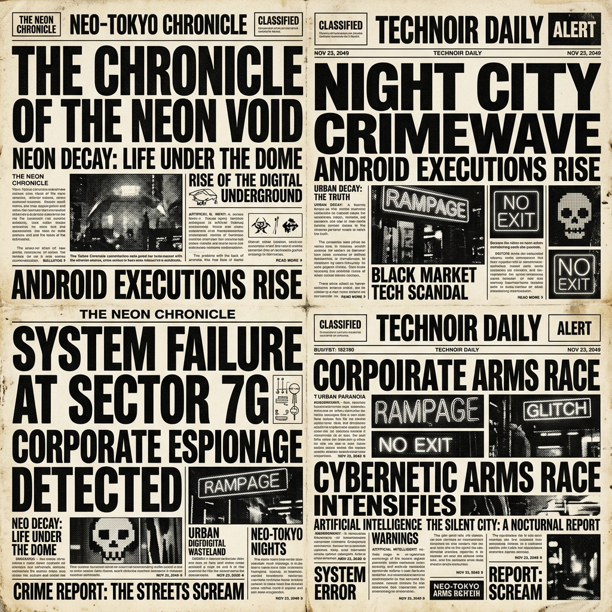
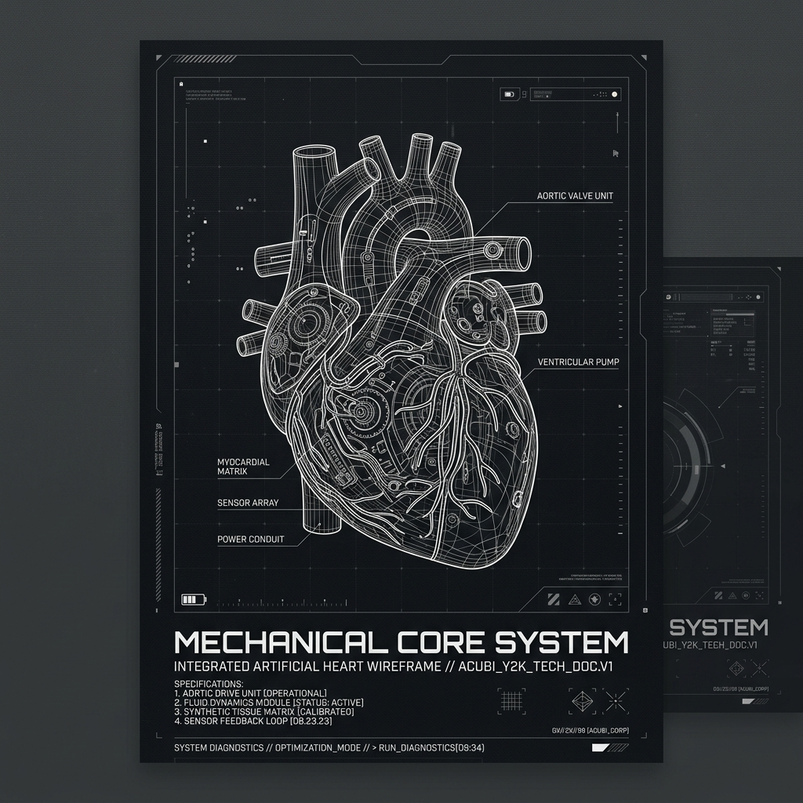
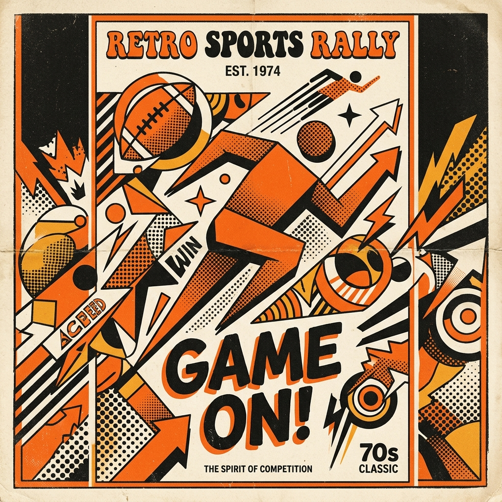
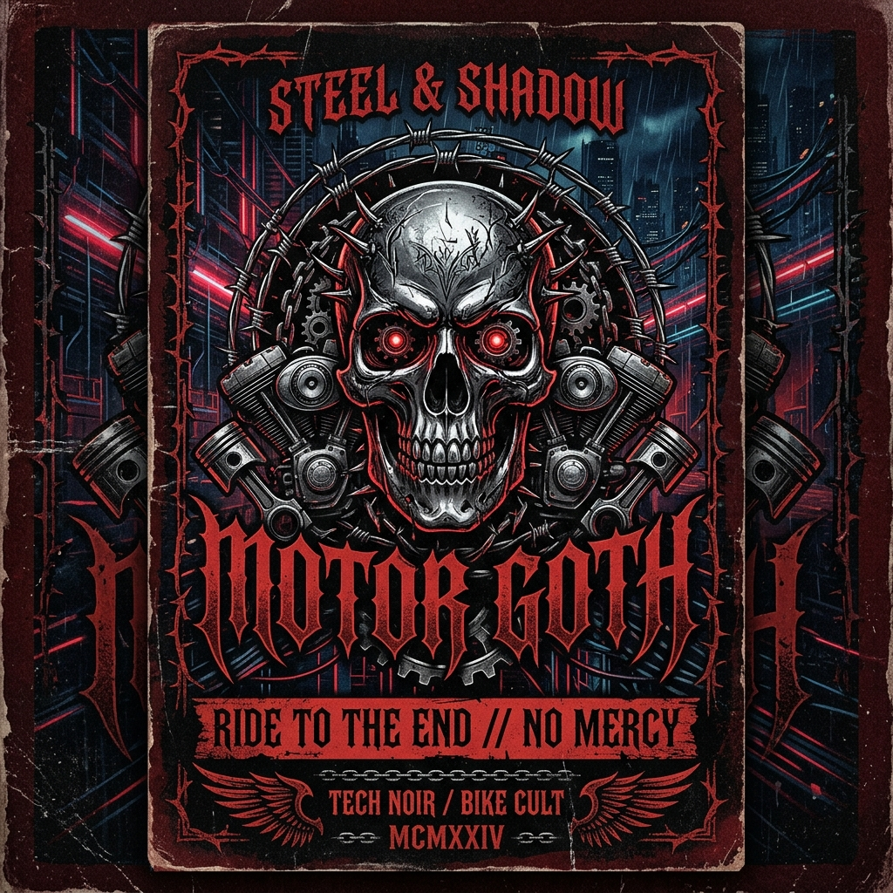
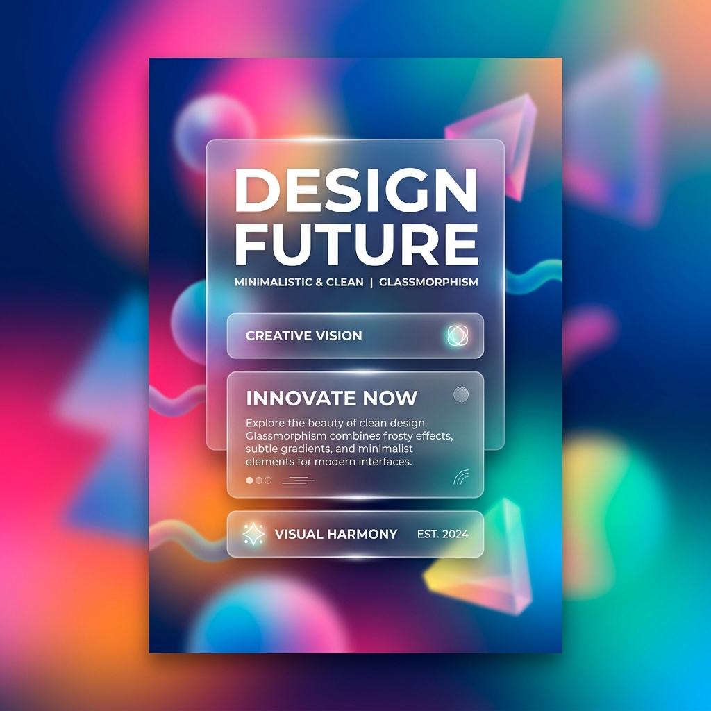
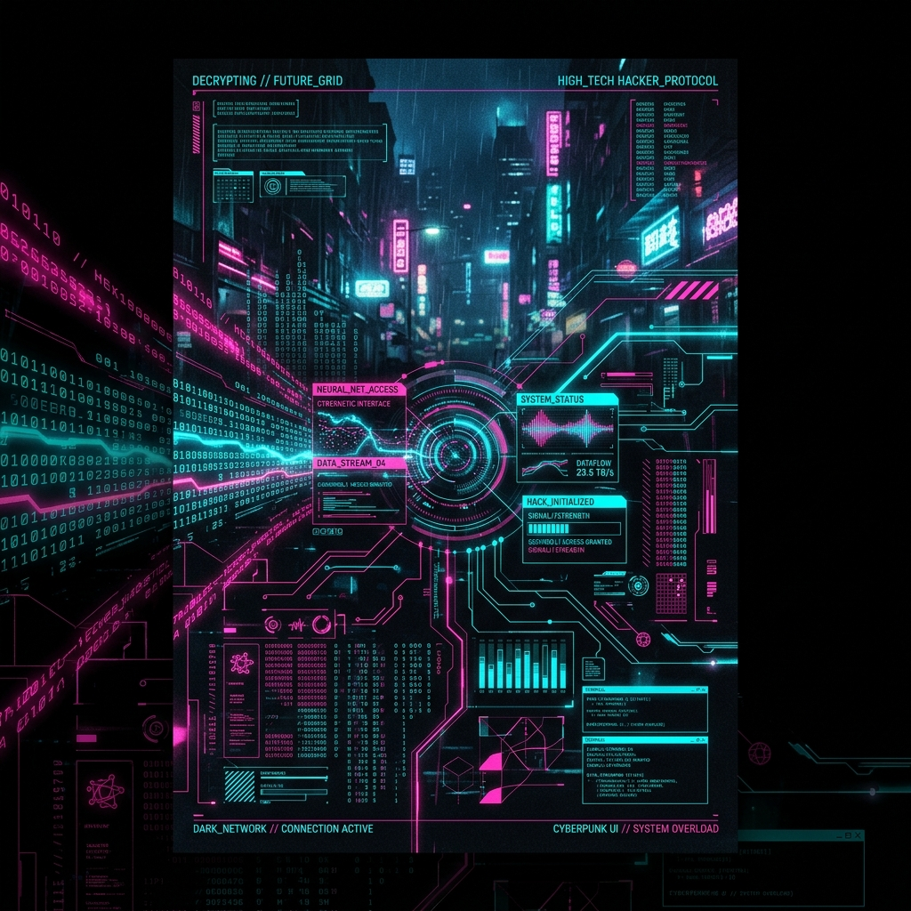
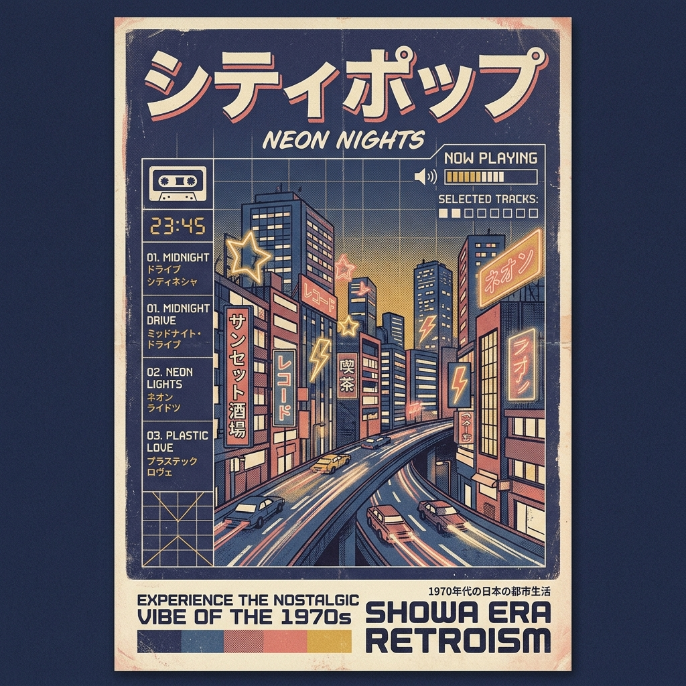
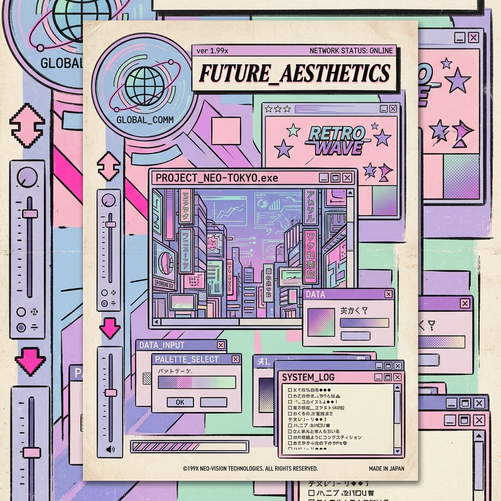
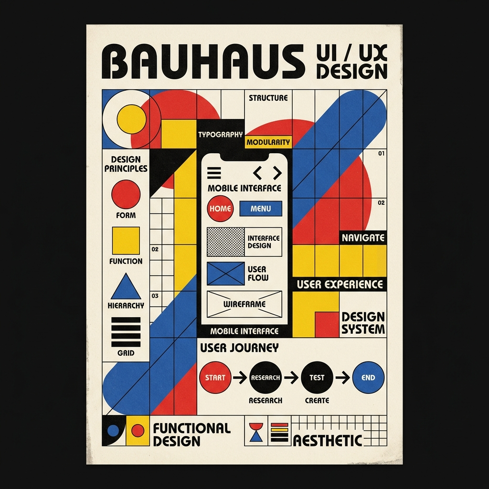
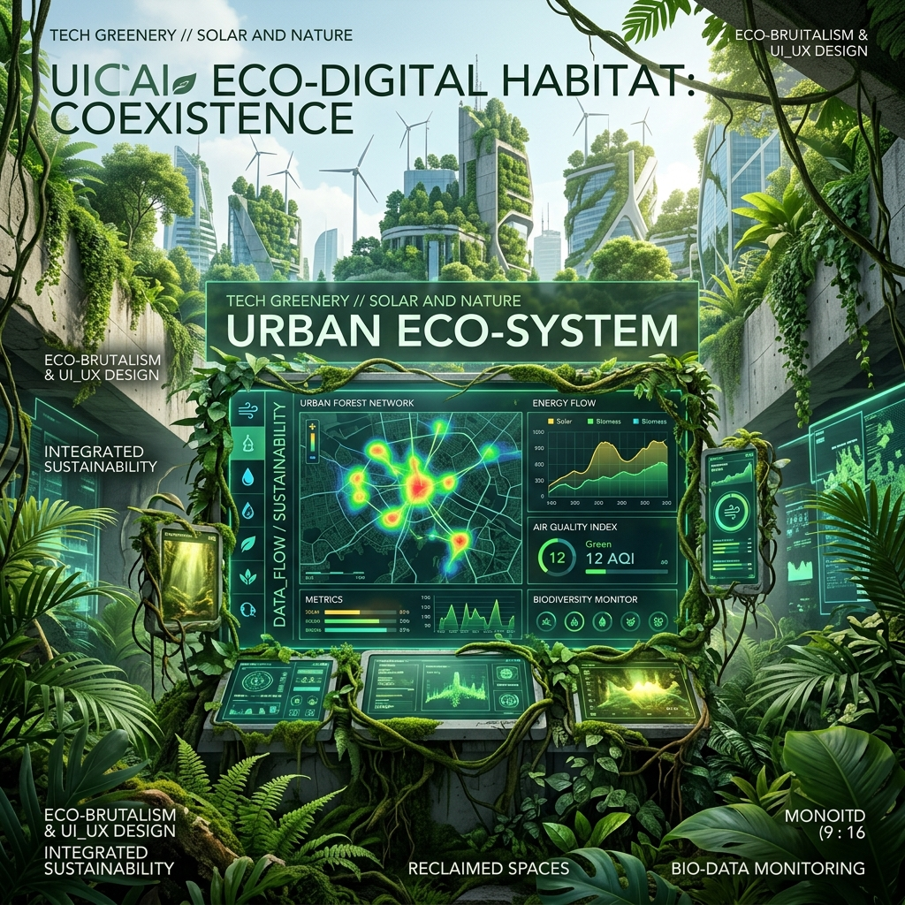

I am a specialized front-end and UI/UX engineer with a proven track record of architecting complex solutions from the ground up. My deployed architecture includes high-traffic commercial platforms like premium gym interfaces, enterprise-grade waste management systems, and a fully custom property management dashboard complete with secure authentication and real-time notifications.
Currently, I am developing CookCan—an AI-powered SaaS application integrated with the Gemini API. It leverages computer vision to analyze pantry images and dynamically generates customized, data-driven recipes in real-time. My workflow is heavily influenced by brutalist design systems and light tech-noir aesthetics, prioritizing high information density and stark, uncompromised utility.
FEATURED EXPERIENCE
IN_DEVCOOKCAN SAAS (AI/GEMINI INTEGRATION)
IN_DEVRENTCAN (WASTE MANAGEMENT PLATFORM)
SHIPPEDFULL-STACK PROPERTY MANAGEMENT SYSTEM
SHIPPEDCOMMERCIAL GYM DIGITAL INFRASTRUCTURE
OPERATIONAL_REACH
GLOBAL CLIENTELE
Managing infrastructure and delivering frontend architectures for international stakeholders, including dedicated US-based and India-based enterprise clients.
CLIENT RELATIONS
Dual-specialized as a Client Relation Specialist, bridging the critical gap between highly technical engineering processes and seamless business communication.
UNIVERSAL SAAS
Engineering globally accessible SaaS products designed for massive scale, edge delivery, and universal accessibility.
COMMUNICATION_PROTOCOLS
ENGLISH (FLUENT)
FRENCH (FLUENT)
SPANISH (WORKING / LIMITED)
Technology Matrix
ACTIVE MODULES // LOADED IN MEMORY
TYPESCRIPTv5.2.0
REACT / NEXT.JSv14.0
NODE / EXPRESSRUNTIME
POSTGRESQLDB_CLUSTER
TAILWINDCSSSTYLING
GSAP / WEBGLANIMATION
AGILE / SCRUMMETHODOLOGY
CROSS-FUNCTIONALLEADERSHIP
PROBLEM SOLVINGALGORITHMIC
FIGMA / UIPROTOTYPING
GIT / GITHUBVERSION_CTRL
VERCEL / CI-CDDEPLOYMENT
Engineering Log
TECHNICAL ARCHIVE // UI-UX PROTOCOLS
UI/UX4 MIN READ
JUL 10, 2026
The Architecture of Brutalism in Modern SaaS
Why high information density and unapologetic structural design lead to faster operator workflows and superior edge delivery.
FRONTEND7 MIN READ
JUN 28, 2026
State Management for Data-Dense Dashboards
Implementing zero-latency fluid state structures using custom hook architectures in React, specifically for property management interfaces.
AI / GEMINI5 MIN READ
MAY 15, 2026
Building CookCan: Multi-modal Vision API Integration
A deep dive into piping raw camera stream data through Gemini's vision models to generate structured JSON recipe payloads on the fly.
Aesthetic Taxonomy
INTERACTIVE MINDMAP // CLICK NODES FOR ESSAYS

Newspaper Brutalism
BRUTALISM
This is the foundation of high-density information architecture. Just as vintage broadsheets packed columns of dense typography into rigid grids to maximize paper real estate, modern brutalist interfaces prioritize raw data delivery.

Acubi Y2K Minimalism
MINIMALISM
Born from the early digital era, this style relies on technical wireframes and highly structured, almost clinical layouts. It treats the interface as a machine blueprint.

1970s Swiss Grid
GRID SYSTEMS
The bold, flat colors and halftone geometric shapes of the 70s introduced a visual hierarchy that didn't rely on drop shadows or skeuomorphism. It proved that flat design could be deeply engaging.

Gothic Biker Typography
TYPOGRAPHY
While seemingly out of place in SaaS, the aggressive, high-contrast nature of gothic and biker graphics heavily influences modern 'Tech Noir' aesthetics. It's about edge and impact.

Frosted Glassmorphism
GLASSMORPHISM
Glassmorphism uses background blur and translucent layers to establish spatial hierarchy. It creates a sense of depth without the harshness of solid drop shadows.

Cyberpunk Neon
NEON UI
Cyberpunk isn't just an aesthetic; it's a statement about technology. It relies on pitch-black backgrounds pierced by highly saturated neon vectors, typically pinks, cyans, and greens.

Showa Retroism
CITY POP UI
The Showa era brought us the booming optimism of 70s and 80s Tokyo—neon signs reflected in rain puddles, pastel color grading, and heavy reliance on nostalgic analog warmth.

Vintage Anime
CEL SHADED
90s Cel Shaded animation was defined by hyper-detailed mechanical environments contrasted with soft, flat-colored character designs. It is the ultimate intersection of humanity and machinery.

Bauhausian Modernism
MODERNIST
The Bauhaus movement stripped design down to its most functional elements: primary colors (red, blue, yellow) and basic geometric shapes (circle, square, triangle). It argued that utility is inherently beautiful.

Tech Greenery
SOLARPUNK
Tech Greenery, or Solarpunk, envisions a future where advanced technology and organic nature seamlessly coexist. Visually, it blends harsh technological UI elements with lush green organic motifs.
Selected Projects
A curated collection of digital products and web applications.